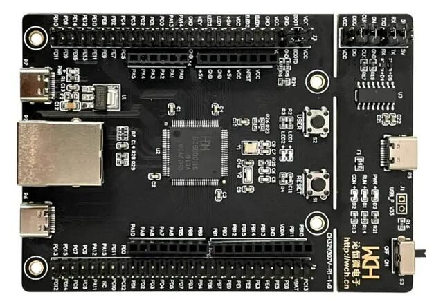

This project template forms the basis of an expansion board (Shield) for the
CH32V307
EVT R1 an evaluation board with two 54-pin GPIO header based on the CH32v307
Microcontroller.

This project includes a PCB edge set according to the edge board excluding the RJ45 connector and the WCH-Link, with 2 connectors placed correctly to align the two boards.
(c)2024 Manuel Alejandro Baez Ponce
(c)2024 KiCad Developers